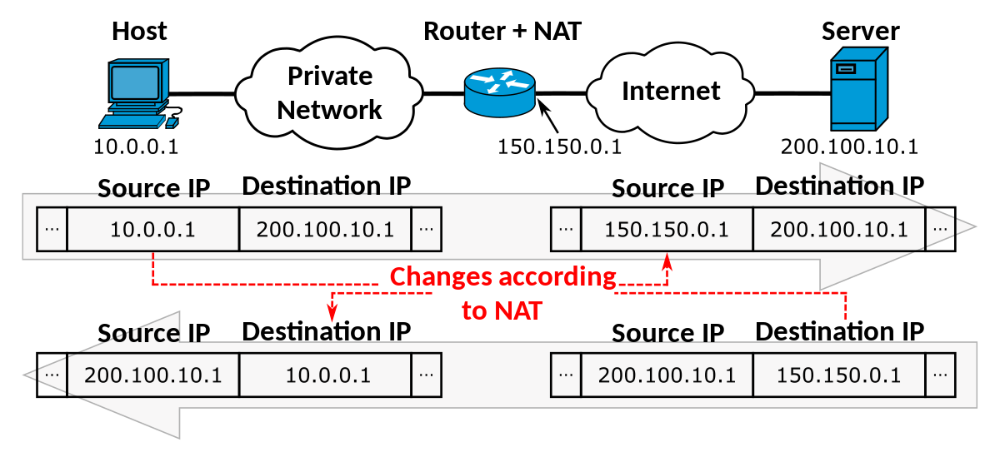

Based on playlist
1. Installing kvm
# Confirm, that there is virtualization support on your platform
lscpu | grep Virtualization
sudo apt install qemu-kvm
sudo apt install libvirt-daemon-system libvirt-clients
sudo adduser $USER kvm
# [optional] gui
sudo apt install virt-manager
2. bridge & NAT networking
2.1 NAT
NAT - when guest cannot access the local network of the host machine, it can only access the internet through NAT (address translation happens on the host machine, not on the router).

Let's look, how the network interfaces look on host (ip addr). Default network
configuration is the following:
- virt-manager acts as a virtual router with NAT enabled
- all guests reside in the same local network under this router (see
ip addroutput to determine the local IP), and can see each other - physical host is not visible in this virtual network and is unreachable from guests. And vice-versa: host cannot reach the virtual network
virbr0device stands for VIRtual BRidge number 0 a.k.a. virtual switch.virbr0-nic- is just a virtual network card (Network Interface Controller), which is connected to this bridge.- for each VM we will see
vnet0...vnetN- these are virtual NICs of each guest
Now, let's look at brctl:
sudo apt install bridge-utils
brctl show
We will see that all the VMs can see each other since they connect to the same virtual bridge virbr0. If we want the guests to not see each other, we can put them in different networks.
Okay, but what if we want the host and guest to see each other...
2.2 Bridged networks
Warning: bridging with wireless connection is way more complicated than with ethernet cable. See this reddit post and the linked solution
Unlike NAT, with bridged network we don't have a virtual router. Instead, we use a virtual switch, to which we connect all the guests and the host. The result is following:
- Each guest is seen as a separate machine on our home router LAN
- each guest receives its IP via DHCP from the home router
- host is still seen as a separate machine on LAN with its own IP leased via DHCP
The bridge network can be configured via nmtui: timecode
Further reading
- NIC (rhel)
- Qemu network setup
3. Snapshots
UEFI-based VM snapshots work out of the box, they are called external snapshots and are designed akin to git commits: we only store an image delta and need all of the intermediate deltas to be present.
For BIOS-based VMs though, to create snapshots, you'll have to switch loader
type from pflash to rom. If you then want your VM to boot, the loader will
have to be switched back to pflash. This type of snapshotting technique is
call internal snapshots.
On one hand, internal snapshots may take a lot of memory. On the other hand, external snapshots need to have the base image ("backing store") and all of the intermediate deltas present, making this approach fault intollerant.